Chapter 7 Prophet
7.1 Components
Prophet is a model framework introduced to the public by Facebook in 2018. Facebook uses this algorithm to forecast univariate time series by decomposing the it into pieces. This is similar to exponential smoothing, ETS, etc. In the Prophet model structure, the signal is broken down into three pieces - growth/trend, season, holiday.
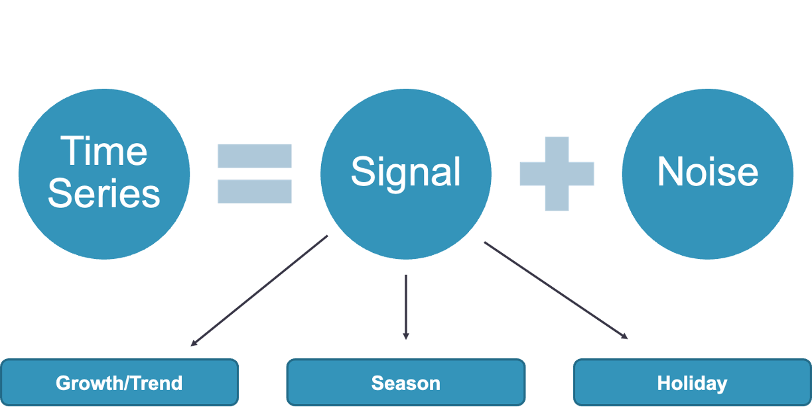
Growth / Trend
The growth/trend component uses trend lines (time) as variables in the model. This trend is a piecewise trend that brakes the pattern into different pieces using knots to change the slope.
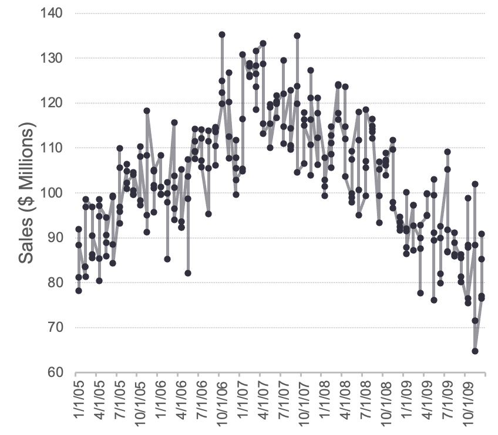
Piecewise linear regression is a model where different straight-line relationships for different intervals in the predictor variable. The following piecewise linear regression is for two slopes:
\[ y = \beta_0 + \beta_1x_1 + \beta_2(x_1-k)x_2 + \varepsilon \]
The \(k\) value in the equation above is called the knot value for \(x_1\). The \(x_2\) variable is defined as a value of 1 when \(x_1 > k\) and a value of 0 when \(x_1 \le k\). With \(x_2\) defined this way, when \(x_1 \le k\), the equation becomes \(y = \beta_0 + \beta_1x_1 + \varepsilon\). When \(x1 > k\), the equation gets a new intercept and slope: \(y = (\beta_0 - k\beta_2) + (\beta_1 + \beta_2)x_1 + \varepsilon\). The user of the algorithm can specify the knots, or the algorithm will try to automatically select them. This trend can also be a logarithmic trend that is similar in design to the dampened trend approach to exponential smoothing.
Season
The seasonal component consists of Fourier variables to account for the seasonal pattern that are similar to the ones discussed in the seasonality section previously. Fourier showed that a series of sine and cosine terms of the right frequencies approximate periodic patterns in a data series. To do this, we add Fourier variables to a regression model to account for the seasonal pattern. The odd terms \(k=1,3,5\) etc. are accounted for with sine variables:
\[ X_{k, t} = \sin(k \times \frac{2\pi t}{S}) \]
The even terms \(k = 2, 4, 6\) etc. are accounted for with cosine variables:
\[ X_{k, t} = \cos(k \times \frac{2\pi t}{S}) \]
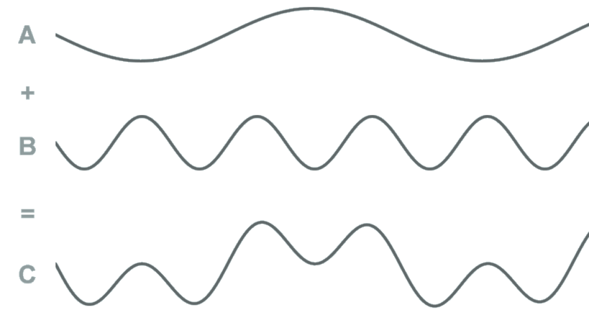
The Prophet algorithm was originally designed for daily data with weekly and yearly seasonal effects. This can be expanded though to handle different types of data and seasons. The yearly season is set to 10 Fourier variables by default:
\[ X_Y = \cos(\frac{2\pi t}{365.25}) + \sin(2 \times \frac{2\pi t}{365.25}) + \cdots + \sin(10 \times \frac{2\pi t}{365.25}) \]
The weekly season is set to three Fourier variables by default:
\[ X_W = \cos(\frac{2\pi t}{7}) + \sin(2 \times \frac{2\pi t}{7}) + \cos(3 \times \frac{2\pi t}{7}) \]
Although these are the default, they can be modified to handle different patterns in data.
Holiday
The last component is the holiday component that consists of binary dummy variables to flag holidays in the dataset. These dummy variables are similar to the intervention variables we covered in the dynamic regression section previously. A point intervention is typically denoted with a binary variable that flags when event occurs by taking a value of 1 with all other values set to zero.
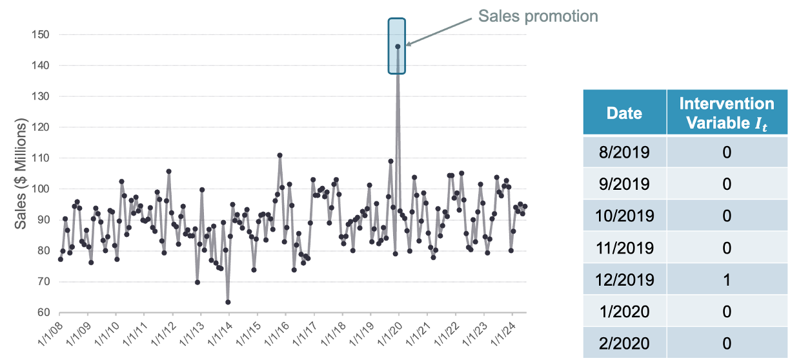
Implementation
Let’s see how to build this in each of our softwares!
7.1.1 R
The fable.prophet package contains all the functions needed for the Prophet algorithm. For our dataset we have a point intervention at September, 2001. We can easily create a binary variable that takes a value of 1 during that month and 0 otherwise. By using the formula structure in the prophet function in the model function, we can add this intervention to our model as well as build out the other components of the Prophet model. Next, we will add the growth component (growth function) where we specify the trend to be linear (“linear”). Lastly, we use the season function to add our own monthly seasonality. We have period = “year” to define the annual season in our data and the order = 6 to define the fourier terms. We will use 6 as we did back in the dynamic regression section. From there we will decide whether we want this seasonal effect to be additive or multiplicative. We choose multiplicative based on the other seasonal models we have built being this structure. Of course, you can always try both to see which works better.
## Warning: package 'fable.prophet' was built under R version 4.5.2model_prophet <- train %>%
model(prophet(Passengers ~ season(period = "year", order = 6, type = "multiplicative")))Once the model is built, we can plot the components function with the autoplot function to view the components of the Prophet model that were calculated from our data.
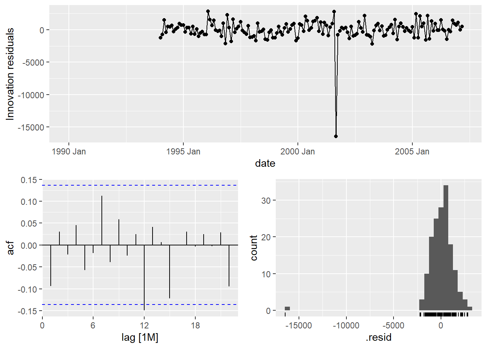
The above output looks similar to what we would expect. After the original data is plotted at the top we have our growth / trend component. The piecewise trend line seems to follow the general pattern of the data. Next, we have our seasonal component comprised of Fourier variables to mimic the season in our data. Lastly, we have the additive terms (here our “holiday”) to represent the September 11 point intervention. At the bottom of the plot above we have our residuals, but let’s examine those further with the gg_tsresiduals function and the augment and feastures function with the ljung_box option to test for white noise.
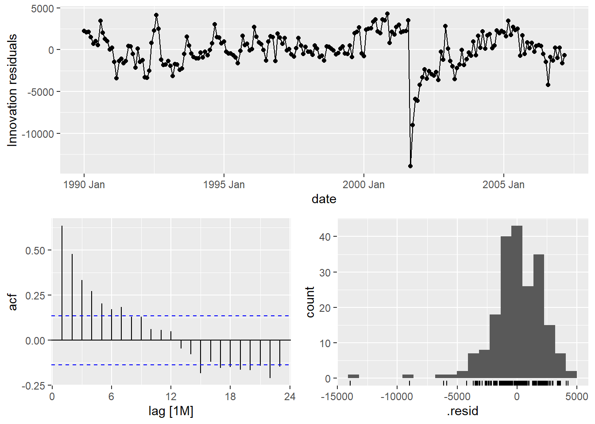
## # A tibble: 1 × 3
## .model lb_stat lb_pvalue
## <chr> <dbl> <dbl>
## 1 "prophet(Passengers ~ season(period = \"year\", order = 6, … 366. 0Looks like our residuals still have some autocorrelation in them so further pattern exists. This isn’t surprising as the Prophet algorithm was never designed to be a statistical algorithm that removes all the autocorrelation from the data like an ARIMA model.
Now let’s forecast the Prophet model for our data. To forecast these values going forward, we need future values of our predictor variable. For this dataset, we have our Sep11 variable that we forecast to have values of 0 for each of the 12 observations we are forecasting for airline passengers. To do this we create another variable (of the same name) that has future values in our test dataset. We then use the forecast function with both the model and the test dataset as inputs. The forecast function will be expecting a test dataset that contains the Sep11 variable in it. We also plot the forecast.
model_prophet_for <- fabletools::forecast(model_prophet, test)
model_prophet_for %>%
autoplot(train) +
autolayer(fitted(model_prophet), col = "blue", linetype = "dashed") +
ylab("Airlines Passengers") +
geom_vline(xintercept = as_date("2007-03-15"), color="orange", linetype="longdash")## Plot variable not specified, automatically selected `.vars = .fitted`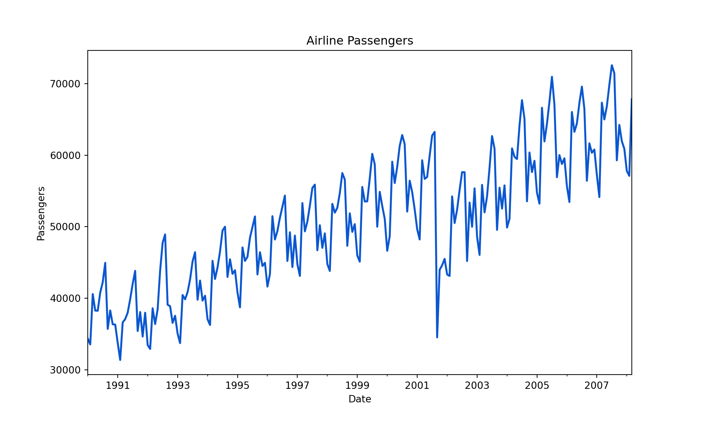
We can use the accuracy function from the fabletools package to evaluate these forecasts. The only inputs for this function are the model object and the test dataset.
## # A tibble: 1 × 10
## .model .type ME RMSE MAE MPE MAPE MASE RMSSE ACF1
## <chr> <chr> <dbl> <dbl> <dbl> <dbl> <dbl> <dbl> <dbl> <dbl>
## 1 "prophet(Passengers … Test -1160. 1598. 1229. -1.79 1.90 NaN NaN -0.0561It appears as if the Prophet model was not as accurate as some of the other approaches that we have used to model our data. The possible reasoning for this is discussed in the forecasting section below.
7.1.2 Python
Although the Prophet model is in another package in Python (the prophet package), the data structure in the StatsForecast package that we have used so far is the exact same. This makes the implementation of the Prophet algorithm in Python much easier. For our dataset we have a point intervention at September, 2001. We can easily create a binary variable that takes a value of 1 during that month and 0 otherwise. By using the merge function on our training dataset we can add this new variable to our training data.
First, we need the Prophet function from the prophet package. Then all we need to do it define the structure of the model that we want. By default, the Prophet function will include a linear growth term for us. The seasonality_mode = “multiplicative” option adds a multiplicative seasonal effect for our Fourier variables. We choose multiplicative based on the other seasonal models we have built being this structure. Of course, you can always try both additive and multiplicative to see which works better. Too add in our Sep11 variable we use the add_regressor function to our model. Lastly, we use the .fit function with our training dataset to build the model.
Sep11 = np.full(shape = 207, fill_value = 0)
d_X = {'unique_id': 1, 'ds': train.index, 'Sep11': Sep11}
X_sf = pd.DataFrame(data = d_X)
X_sf.loc[140, 'Sep11'] = 1
train_sf_X = train_sf.merge(X_sf, how = 'left', on = ['unique_id', 'ds'])
from prophet import Prophet
m = Prophet(seasonality_mode='multiplicative')
m.add_regressor('Sep11')## <prophet.forecaster.Prophet object at 0x00000285FE8FAA50>## <prophet.forecaster.Prophet object at 0x00000285FE8FAA50>Let’s also evaluate the residuals from this model using the acorr_ljungbox from the statsmodels package on the residuals from our model to test for white noise. First we need to calculate the residuals. To do this we need the predict function on our model to give us the predicted values of our training data. From there we calculate the residuals by taking these predicted values and subtracting them from the true values of our target variable y.
fitted = m.predict()
train_sf_X = train_sf_X.merge(fitted, on = 'ds')
residuals = train_sf_X['y'] - train_sf_X['yhat']
sm.stats.acorr_ljungbox(residuals, lags = [12], model_df = 5)## lb_stat lb_pvalue
## 12 208.216878 2.083872e-41Looks like our residuals still have some autocorrelation in them so further pattern exists. This isn’t surprising as the Prophet algorithm was never designed to be a statistical algorithm that removes all the autocorrelation from the data like an ARIMA model.
To forecast these values going forward, we need future values of our predictor variable. For this dataset, we have our Sep11 variable that we forecast to have values of 0 for each of the 12 observations we are forecasting for airline passengers. To do this we create another variable (of the same name) that has future values. This new variable is then put into the test dataset which gets passed inside of the .predict function on our model that we built. The function is expecting a variable in the test dataset called Sep11 in it. From there we plot the forecast with the .plot function.
Sep11 = np.full(shape = 12, fill_value = 0)
d_X = {'unique_id': 1, 'ds': test.index, 'Sep11': Sep11}
X_sf = pd.DataFrame(data = d_X)
test_sf_X = test_sf.merge(X_sf, how = 'left', on = ['unique_id', 'ds'])
fcst = m.predict(test_sf_X)
fig = m.plot(fcst)
plt.show();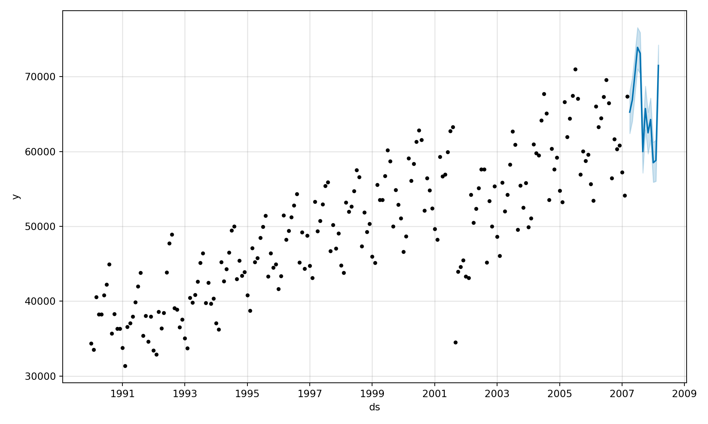
We can use the forecasted values from the above code to evaluate these forecasts by comparing them to the test dataset.
fcst.index = fcst['ds']
error = test['Passengers'] - fcst['yhat'].tail(12)
MAPE = np.mean(abs(error)/test['Passengers'])*100
print("Prophet MAE =", np.mean(abs(error)), "\nProphet MAPE =", MAPE)## Prophet MAE = 1507.1520395638254
## Prophet MAPE = 2.34739154766238It appears as if the Prophet model was not as accurate as some of the other approaches that we have used to model our data. The possible reasoning for this is discussed in the forecasting section below.
7.1.3 SAS
At the time of creating this website, SAS did not have any way of directly implementing the Prophet algorithm in any of the procedures. However, since the Prophet algorithm is just a combination of a series of known variables, we can create those ourselves. For our dataset we have a point intervention at September, 2001. We can easily create a binary variable that takes a value of 1 during that month and 0 otherwise. We will also need a trend variable for the growth component. The time_trend variable will be our trend which we create with the +1 functionality of SAS to get a variable going 1, 2, 3, ., t. We also need to create a dataset that blanks out all the values of the Passenger variable past in our test window. SAS needs a dataset with the training data as well as future values of the predictor variables to forecast with a regression-based approach. Lastly, we need to use the trend variable to create our Fourier variables as defined above.
data usair_pred;
set usair;
Sep11 = 0;
if date = '1sep2001'd then Sep11 = 1;
if date > '1mar2007'd then Passengers = .;
time_trend + 1;
run;
data usair_pred;
set usair_pred;
f1 = sin(2*constant("pi")*time_trend/12);
f2 = cos(2*constant("pi")*time_trend/12);
f3 = sin(2*2*constant("pi")*time_trend/12);
f4 = cos(2*2*constant("pi")*time_trend/12);
f5 = sin(3*2*constant("pi")*time_trend/12);
f6 = cos(3*2*constant("pi")*time_trend/12);
f7 = sin(4*2*constant("pi")*time_trend/12);
f8 = cos(4*2*constant("pi")*time_trend/12);
f9 = sin(5*2*constant("pi")*time_trend/12);
f10 = cos(5*2*constant("pi")*time_trend/12);
f11 = sin(6*2*constant("pi")*time_trend/12);
f12 = cos(6*2*constant("pi")*time_trend/12);
run;Now that the data has the needed variables we can build our model. The only complication comes from the piecewise linear regression part of the Prophet algorithm. For that we can use PROC GLIMMIX. The EFFECT statement allows us to create a piecewise variable using the spline function on the time_trend variable. The degree = 1 option makes the piecewise function linear and knotmethod = option allows us to specify a list of values where we want knots to occur. The list must also include the first and last points of the variable. From there we can use the MODEL statement to define our models using our newly created growth variable, our Sep11 variable, and the Fourier variables f1 through f11. Lastly, we put the solution option in the MODEL statement to get the procedure to estimate the coefficients. The OUTPUT statement allows us to save the predictions (predicted =) as a variable in a dataset (out =).
We can plot the predicted values from this model with PROC SGPLOT.
proc glimmix data = usair_pred;
effect growth = spline(time_trend / degree = 1 knotmethod = list(1 30 120 141 145 156 219));
model Passengers = growth Sep11 f1-f11 / solution;
output out = Proph_f predicted = Pred;
quit;
proc sgplot data = Proph_f;
series x = date y = Passengers;
series x = date y = Pred / lineattrs=(color=red pattern=dash thickness=1);
run;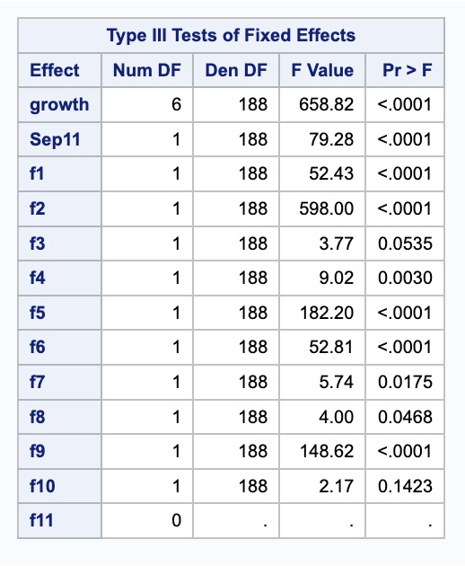
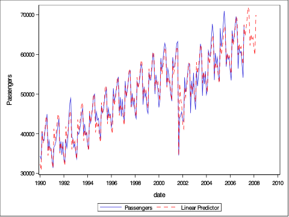
We need to isolate just the forecasted observations from the output above. For that we use the DATA STEP to just look at the predicted values from the two previous models beyond the March, 2007 training observations with the WHERE statement. Next, we use the MERGE statement in another DATA STEP to merge the original test dataset with the predicted values from the above model. Lastly, we calculate the absolute error and absolute percentage error for each observation with our last DATA STEP. To get the average of these calculations, we throw our test dataset into the PROC MEANS procedure where we specify these variables with the VAR statement.
data Proph_f;
set Proph_f;
where date > '1mar2007'd;
Predict_Proph = Pred;
keep Predict_Proph;
run;
data test;
merge test Proph_f;
run;
data test;
set test;
AE_Proph = abs(Passengers - Predict_Proph);
APE_Proph = abs(Passengers - Predict_Proph)/Passengers*100;
run;
proc means data = test;
var AE_Proph APE_Proph;
run;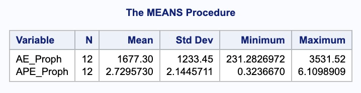
It appears as if the Prophet model was not as accurate as some of the other approaches that we have used to model our data. The possible reasoning for this is discussed in the forecasting section below.
7.2 Forecasting
The Prophet model does not use any lag values of the target variable in its calculation. That means that it is basically a curve-fitting approach to forecasting. Therefore, to forecast the Prophet model we just extend the curves into the future.
Be careful putting all your trust in the Prophet algorithm due to this fact. Facebook find values in the Prophet algorithm, but you may not because your data might be fit best with other approaches.